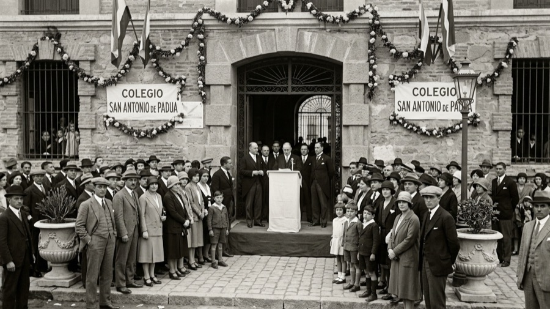
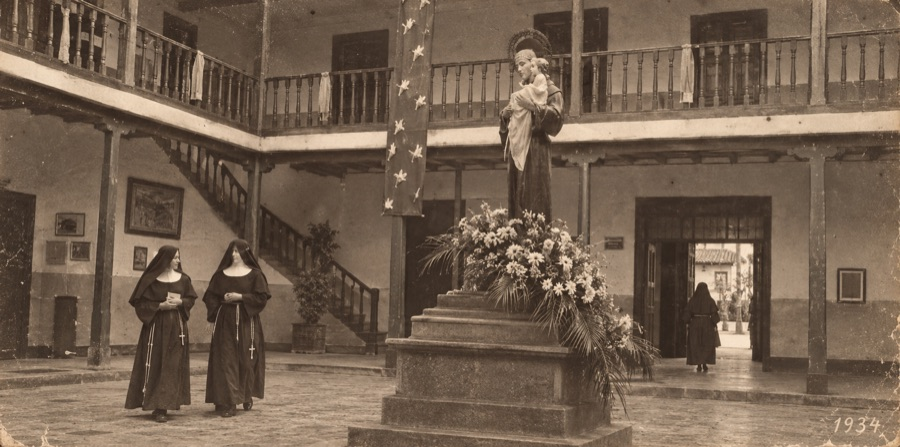
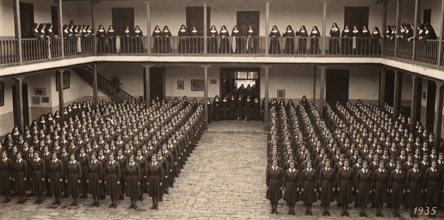
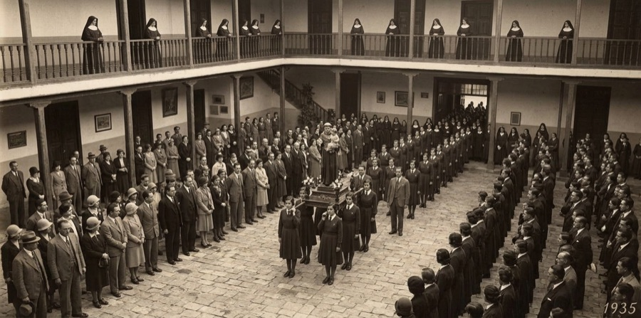
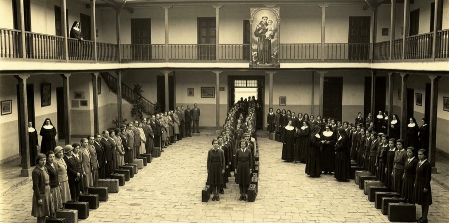
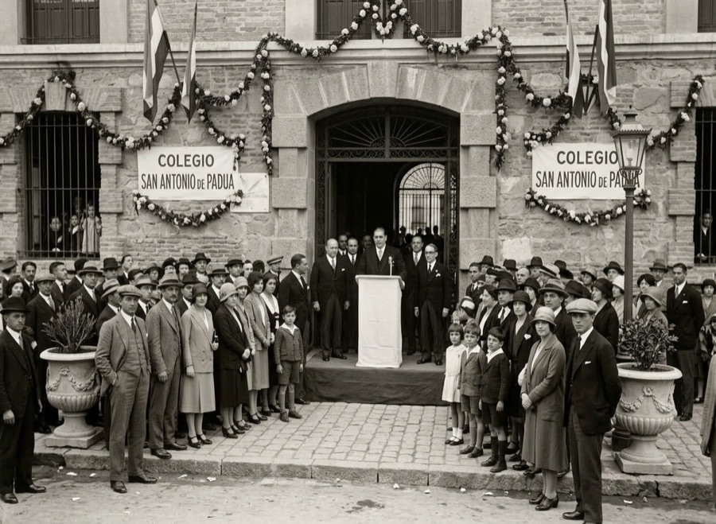

1926
El Concejo Municipal de Timbío decide destinar el edificio de la antigua Escuela Urbana de Niñas a una comunidad religiosa.

El Concejo Municipal de Timbío decide destinar el edificio de la antigua Escuela Urbana de Niñas a una comunidad religiosa.

Llegada de las Hermanas Franciscanas de María Inmaculada a Timbío.

Inicio de actividades académicas el 9 de enero, con 299 estudiantes.

Inauguración oficial de la escuela el 2 de febrero.

Crecimiento de la matrícula: 392 estudiantes en 1935-1936 y 406 en 1936-1937.

Visita del presidente de la República, Eduardo Santos, el 29 de junio.
La Institución Educativa San Antonio de Padua tiene sus orígenes en 1926, cuando el Concejo Municipal de Timbío decidió destinar el edificio de la antigua Escuela Urbana de Niñas a una comunidad religiosa. Con este propósito se estableció contacto con la Congregación de las Hermanas Franciscanas de María Inmaculada, y el 13 de septiembre de 1934 se firmó el contrato oficial con la Reverenda Madre Sor María Caridad Brader.
Las Hermanas Franciscanas llegaron a Timbío el 19 de diciembre de 1934. Poco después, el 21 de diciembre, fueron posesionadas las primeras directivas: Sor María Esperanza como Directora y Sor María Benilda como Subdirectora. Las actividades académicas comenzaron oficialmente el 9 de enero de 1935 con 299 estudiantes, y la inauguración oficial se realizó el 2 de febrero de ese mismo año.
La institución creció rápidamente: durante el año lectivo 1935-1936 se matricularon 392 estudiantes, cifra que aumentó a 406 en 1936-1937. En 1938 fue sede de una Semana Pedagógica que reunió a docentes de Timbío, Sotará y El Tambo, y el 29 de junio de ese año recibió la visita del entonces presidente de la República, Eduardo Santos.
Desde entonces, la institución ha continuado su labor educativa, ofreciendo hoy los niveles de Preescolar, Básica Primaria, Básica Secundaria y Media Técnica, bajo el lema que la identifica: "Virtud y Saber".